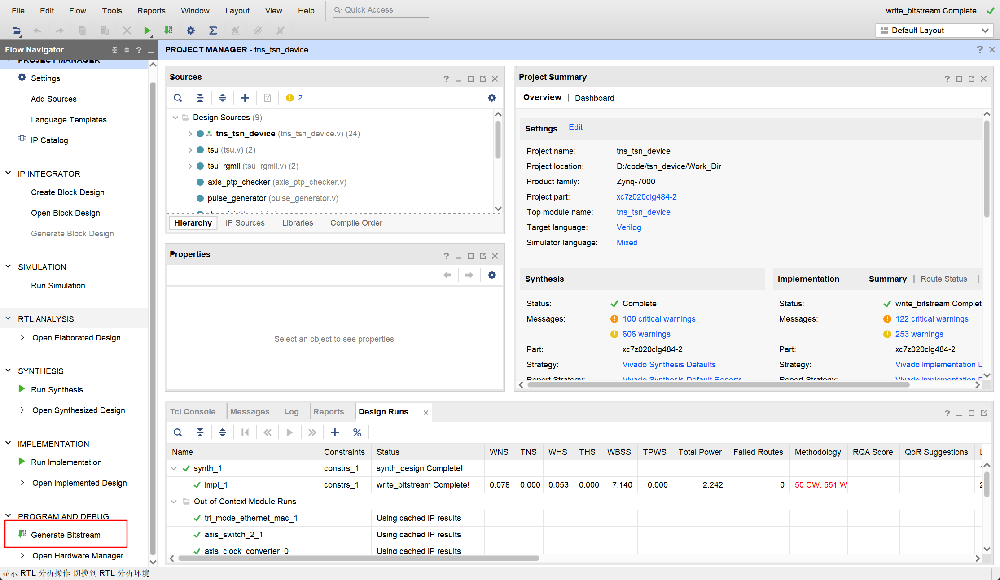

硬件构建 #
开始前 #
如果您只想让开发板运行而不进行修改，并且使用我们提供的硬件文件，可以直接跳到步骤 SD 卡分区和文件复制。
目录 #
安装 Vivado #
您可以在 这里 下载 Vivado。
我们使用的是 Vivado 2020.1 版本（注意：需要统一版本，否则运行可能会出现问题）。
Vivado 项目构建 #
- 克隆硬件部分的 git 仓库。
- 打开 Vivado 并在 Tcl 控制台中输入命令
cd Project_Dir和source ./tsn_device.tcl。命令执行后，Vivado 将自动打开创建的项目。此时，我们将先关闭 Vivado 并将项目所在文件夹重命名为Work_Dir，以便 git 可以正确忽略该目录，然后进入Work_Dir，双击.xpr文件再次打开项目。


- 点击
Generate Bitstream

-
导出 xsa 文件。在 Vivado 中，选择 File Export Export Hardware。平台类型选择 Fixed。输出选择 include bitstream。点击 Finish 导出 xsa 文件。
导出的 xsa 文件路径：
Work_Dir/tns+tsn_device.xsa
Petalinux #
1. 安装 Ubuntu 操作系统 #
以下编译过程均在虚拟机中完成。
我们推荐使用以下配置：
虚拟机版本：VMware Workstation 16 Pro
Ubuntu 版本：ubuntu-16.04.3-desktop-amd64.iso
2. 预先下载 PetaLinux 相关镜像文件 #
进入网站：https://www.xilinx.com/support/download/index.html/content/xilinx/en/downloadNav/embedded-design-tools/archive.html
选择 2020.1 找到 PetaLinux Tools sstate-cache artifacts 并下载 sstate_arm_2020.1 和 downloads，并将下载的文件保存在虚拟机的指定目录（本文档中的目录设置为 /home/alinx/data/）

3. 激活 PetaLinux 环境 #
source /opt/pkg/petalinux/settings.sh
每次启动终端时自动激活 PetaLinux 环境。
4. 创建 PetaLinux 项目 #
petalinux-create --type project --template zynq --name <project_name>
cd <project_name>
5. PetaLinux 配置 #
- 导入硬件配置
petalinux-config --get-hw-description <PATH-TO-XSA Directory>
然后您将进入 menuconfig 页面，按照以下配置：
Subsystem AUTO Hardware Settings
-> Ethernet Settings
-> [*] Randomise MAC address
Image Packaging Configurations
-> Root filesystem type
-> [*] EXT4 (SD/eMMC/SATA/USB)
Yocto Settings (Use downloaded image)
-> Local sstate feeds settings: /home/alinx/data/sstate_arm_2020.1/arm
-> Add pre-mirror url: file:///home/alinx/data/downloads
- 制作
Kernel Module
制作一个名为 “dma proxy” 的模块：
petalinux-create -t modules -n dma-proxy --enable
替换 dma-proxy 文件夹：
rm -rf project-spec/meta-user/recipes-modules/*
下载我们的 dma-proxy（从 这里）并解压到 project-spec/meta-user/recipes-modules/ 目录中。
- 配置内核
petalinux-config -c kernel
进入 menuconfig 页面，进行以下配置：
Device Drivers
-> Userspace I/O drivers
-> [*] Userspace I/O platform driver with generic IRQ handling
-> [*] Userspace platform driver with generic irq and dynamic memory
-> [*] Xilinx AI Engine driverDevice Drivers
-> Dma Engine Support
-> [*] Xilinx DMA Engines
-> Network device support
-> Ethernet driver support
-> [*] Cadence devices
-> [*] Cadence MACB/GEM support
General setup
-> Preemption Model
-> (X) No Forced Preemption (Server)
- 配置 rootfs
编辑文件 project-spec/meta-user/conf/user-rootfsconfig，并添加以下配置：
CONFIG_sudo
CONFIG_sudo-dev
CONFIG_dnf
CONFIG_packagegroup-core-buildessential
CONFIG_packagegroup-core-buildessential-dev
CONFIG_packagegroup-self-hosted
CONFIG_packagegroup-self-hosted-dev
CONFIG_packagegroup-self-hosted-sdk-dev
CONFIG_packagegroup-self-hosted-sdk
CONFIG_python3
CONFIG_autoconf
CONFIG_autoconf-dev
CONFIG_automake
CONFIG_automake-dev
CONFIG_bison
CONFIG_bison-dev
CONFIG_flex
CONFIG_flex-dev
CONFIG_make
CONFIG_make-dev
CONFIG_python
CONFIG_libtool
CONFIG_libtool-dev
CONFIG_sqlite3
CONFIG_cmake
CONFIG_util-linux
CONFIG_net-tools
保存并退出。
输入：
petalinux-config -c rootfs
然后您将进入 menuconfig 页面，按照以下配置：
Image Features
-> [*] package management
-> (http://petalinux.xilinx.com/sswreleases/rel-v2020/feeds/zc702-zynq7/) Package feed url.
user packages
-> SELECT ALL
- 编译设备树
petalinux-build -c device-tree
- 修改设备树
生成的设备树位于 components/plnx_workspace/device-tree/device-tree/pl.dtsi 目录，我们需要基于该文件进行修改以满足我们的一些外设需求。修改后的文件存储在 project-spec/meta-user/recipes-bsp/device-tree/files/system-user.dtsi 目录中。
注意：在
//>>>和//<<<之间是注释中添加的内容。
/include/ "system-conf.dtsi"
/ {
amba_pl: amba_pl {
dma_proxy {
compatible ="xlnx,dma_proxy";
dmas = <&axi_dma_0 0 &axi_dma_0 1>;
dma-names = "dma_proxy_tx", "dma_proxy_rx";
};
pkt_gen_controller_0: pkt_gen_controller@43c00000 {
compatible = "generic-uio","uio";
reg = <0x43c00000 0x10000>;
};
rtc0: time_sync_uio@43c10000 {
compatible = "generic-uio","uio";
reg = <0x43c10000 0x10000>;
};
};
chosen{
bootargs = "console=ttyPS0,115200 earlyprintk cma=256M uio_pdrv_genirq.of_id=generic-uio root=/dev/mmcblk0p2 rw rootwait";
stdout
-path = "serial0:115200n8";
};
};
&gem1 {
local-mac-address = [00 00 00 00 02 01];
phy-mode = "gmii";
fixed-link {
speed = <1000>;
full-duplex;
};
};
- 编译
petalinux-build
- 打包
在这里，您需要将 Vivado 生成的比特流文件复制到虚拟机。（您可以将比特流文件导出到您想要的位置）。

然后：
cd images/linux
petalinux-package --boot --fsbl zynq_fsbl.elf --fpga <FPGA bitstream path> --u-boot --force
之后，您可以得到 4 个关键文件：BOOT.BIN、boot.scr、image.ub、rootfs.tar.gz
6. SD 卡分区和文件复制 #
文件下载 #
从 这个公共链接或从前述步骤下载以下文件：
- BOOT.BIN
- boot.scr
- image.ub
- rootfs.tar.gz
SD 卡分区 #
为了启动 TSNPerf，您需要一个大于 32GiB 存储容量的 micro SD 卡。然后使用：
sudo apt-get install gparted
sudo gparted
将其分为以下两个分区：
-
BOOT：存储来自 petalinux 的启动文件
前置空闲空间（MiB）：4
新大小（MiB）：500
文件系统：fat32
标签：BOOT
-
ROOTFS：存储 debian 系统 rootfs
前置空闲空间（MiB）：0
后置空闲空间（MiB）：0
文件系统：ext4
标签：ROOTFS
复制文件到 SD 卡 #
挂载 SD 卡：
sudo mount /dev/sda1 /media/alinx/BOOT/
sudo mount /dev/sda2 /media/alinx/ROOTFS/
删除原始文件：
sudo rm -rf /media/alinx/BOOT/* /media/alinx/ROOTFS/*
复制文件：
sudo cp BOOT.BIN boot.scr image.ub /media/alinx/BOOT
sudo tar -zxvf rootfs.tar.gz -C /media/alinx/ROOTFS
sudo cp -r ~/init_os.sh /media/alinx/ROOTFS/home/root/init_os.sh
sync
sudo chown root:root /media/alinx/ROOTFS
sudo chmod 755 /media/alinx/ROOTFS
启动开发板并登录 #
1. 启动开发板 #
将 SD 卡插入 FPGA 板，将开关切换到 SD 卡启动模式。
2. 初始化 PS #
插入 SD 卡，设置 AX7021 板从 SD 启动，打开电源。
将 PC 连接到开发板的 UART 端口。我们推荐使用 MobaXterm 连接串行端口。将速度设置为 115200，流控制设置为 None。

默认用户名和密码如下：
用户名："root"
密码："root"
执行初始化脚本设置 Linux 环境。(hardware/init_os.sh)
sh init_os.sh
您可以自由配置主机名、IP 地址和 MAC 地址等，并可根据需要修改脚本。
3. 连接到互联网 #
将 PC 的网络端口连接到设备的 PS 网络端口（ETH0）。
将 PC 的相应端口设置为与设备在同一子网内（即 192.168.137.x）。
之后，您可以通过 ssh 连接到设备，并复制所需的软件文件。
4. 运行软件 #
请参阅此仓库的软件部分了解进一步的说明。